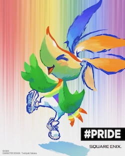
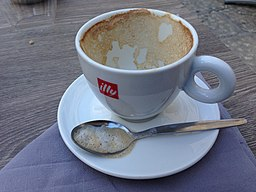

Quote from Albert Einstein in his letter to Carl Seelig in 1952."I have no special talents, I am only passionately curious."
Who Am I...
Hello! My name is Mike. As of fall 2021, I will be starting my senior year at the University of Washington as a Computer Science major. I am a transfer student from Seattle Central College where I completed most of my gen. ed. reqs. Since spring quarter, I have been working with a PhD student in the Security and Privacy Lab assisting with their work.
Classes I'm currently taking
Summer 2021
- CSE 154: Web Programming
- CSE 499: Research
Fall 2021
- CSE 446: Machine learning
- CSE 341: Programming Languages
- CSE 333: Systems Programming
Five of My Favorite Things
- Favorite animal: frogs
- Favorite food: pesto, cauliflower pizza from Mod Pizza
-
Favorite TV show:
- atm... Grey's Anatomy
- but consistently Ru Paul's Drag Race (all of them)
- and Lucifer
-
Favorite hobby: playing video games
- Outriders
- Final Fantasy
- Assassin's Creed
- Favorite color: green
A picture that represents when I'm happy
Available for download at Square Enix .
A picture that represents when I'm sad
Available for download at Jacklee. , CC BY-SA 4.0 , via Wikimedia Commons.